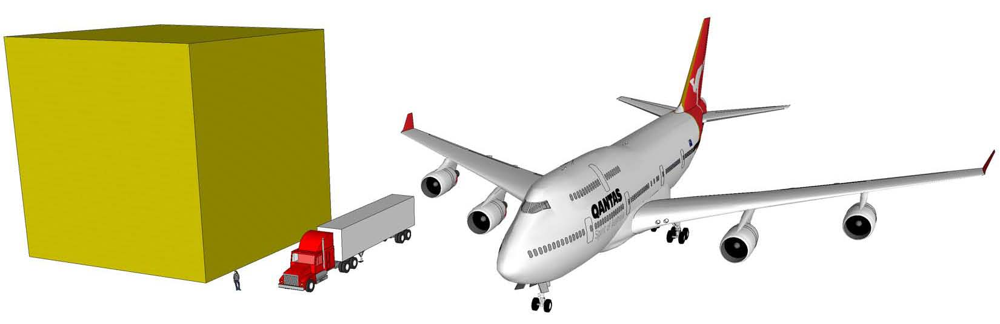

Also known as Au or atomic number 79, Gold occurs often in free elemental form, as nuggets or grains in rocks and veins.
Gold is a precious metal used for coinage, jewelry, and other arts throughout recorded history. In the past, gold was also used as currency, however gold coins ceased to be minted in the 1930s, and the world gold standard was abandoned after 1976. The historical value of gold was rooted in its relative rarity, easy handling and minting, easy melting and fabrication, resistance to corrosion, and distinctive color.
At the end of 2014 there were 183,600 tonnes of gold in existence above ground, with a value of $6.3 trillion. This can be represented by a cube with an edge length of about 21 meters.
A simulation of the size of all the gold ever produced:
Historically, South Africa has been the source for a large proportion of the world's gold supply, with about 50% of the production. In 2007 China overtook South Africa as the world's largest gold producer. As of 2013, China is followed in order by Australia, the United States, Russia, Peru and South Africa.
Regional locations and general geologic settings of known deposits of gold or gold alloys:
Source: Wikipedia USGS minerals GIS database